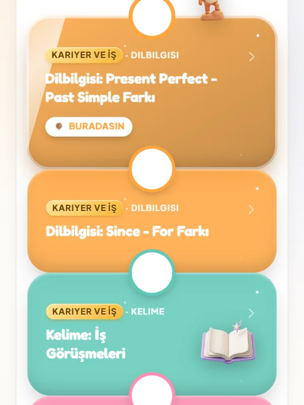

İş İngilizcesi
Toplantıda, sunumda, mülakatta İngilizce.
Kariyer hedefine göre kurulan yol haritası. Ücretsiz başla.
Uygulamada "Kariyer ve İş" hedefini seç.

Hangi an zorluyor?
E-posta
kısa, net, kibar
Toplantı
söz al, fikrini savun
Sunum
açılış, geçiş, kapanış
Mülakat
kendini net anlat
Telefon
anlamadığında ne diyeceğin
Günlük iş
small talk ve geri bildirim
FE App · ücretsiz
Senin işine göre bir yol.
Hedefin "Kariyer ve İş" olunca yol haritan iş durumlarına döner: dilbilgisi, kelime, gerçek iş ifadeleri ve oyunlar.
iPhone'da tarayıcıdan açılır.
Öğrenci Kulübü
Birebir iş İngilizcesi dersi.
Öğrenci Kulübü, Farin'den özel ders alanlar için: birebir online dersler ve sana özel VIP yol haritası.
- İlk dersÜcretsiz
- Paketler₺830–₺850 / ders
- FormatBirebir, online
Merak edilenler
Sıkça sorulan sorular
İş İngilizcesi için hangi seviyede olmam gerekir?
Belirli bir şart yok. A2–B1 de, B2–C1 de bu yolla ilerleyebilir. Seviyeni ilk derste ya da uygulamadaki testte netleştiririz.
Toplantılarda konuşmaya nasıl hazırlanırım?
Gerçek toplantı anlarını canlandırırız: söz almak, kibarca itiraz etmek, özetlemek. Amaç ezber değil, kendi cümleni kurmak.
Mülakat İngilizcesi için çalışma yapılıyor mu?
Evet. Kendini tanıtma, deneyimini anlatma ve sık sorulan sorulara doğal cevap verme. Yaklaşan bir mülakatın varsa ona göre çalışırız.
E-posta yazma da var mı?
Evet. Profesyonel ton, rica, takip e-postası ve kibar ama net ifadeler hedefine göre programa eklenir.
Uygulama iş İngilizcesi için de çalışır mı?
Evet. "Kariyer ve İş" hedefini seçersen yol haritan iş durumlarına göre kurulur: dilbilgisi, kelime, iş ifadeleri ve oyunlar.
Ne kadar sürede toplantılarda rahat konuşurum?
Seviyene, ders sıklığına ve pratiğine bağlı; net bir süre garanti etmiyoruz. İlk derste gerçekçi bir tempo belirleriz.
Kariyer yolun burada başlıyor.
Öğrenmen gerektiği için değil, gidecek bir yerin olduğu için.